Oracle Fusion Middleware on Kubernetes > Oracle WebCenter Sites > Oracle Cloud Infrastructure > Preparing a file system
Preparing a file system
Create Filesystem and security list for FSS
Note: Make sure you create the filesystem and security list in the OKE created VCN
- Login to OCI Console and go to File Storage and Click “File System” 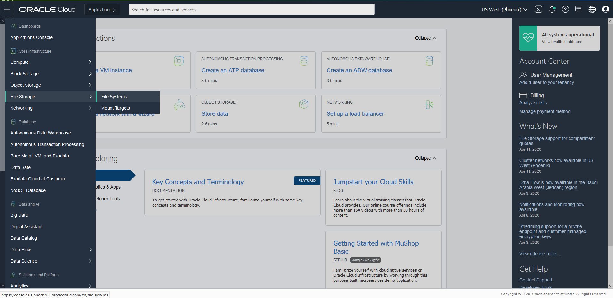
- Click “Create File System” 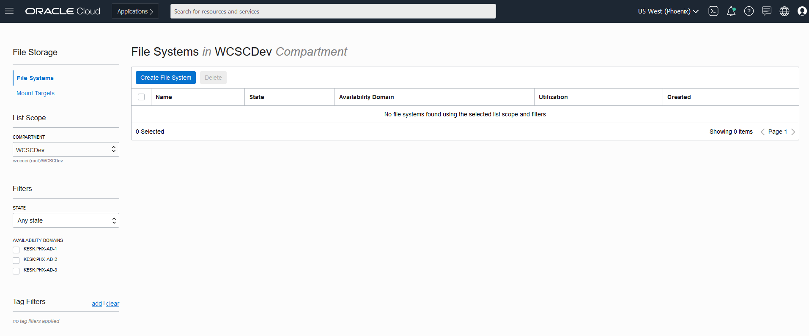
- You can create File System and Mount Targets with the default values. But in case you want to rename the file System and mount targets, follow below steps. 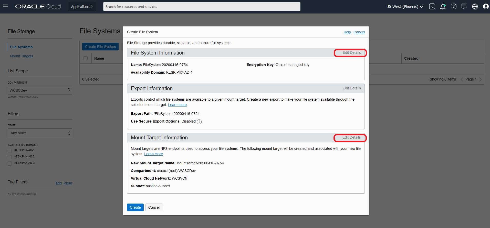 Note: Make Sure the Virtual Cloud Network in Mount Target refers to the one where your instances are created and you will be accessing this file system.
- Edit and change the File System name to say “WCSFileSystem” 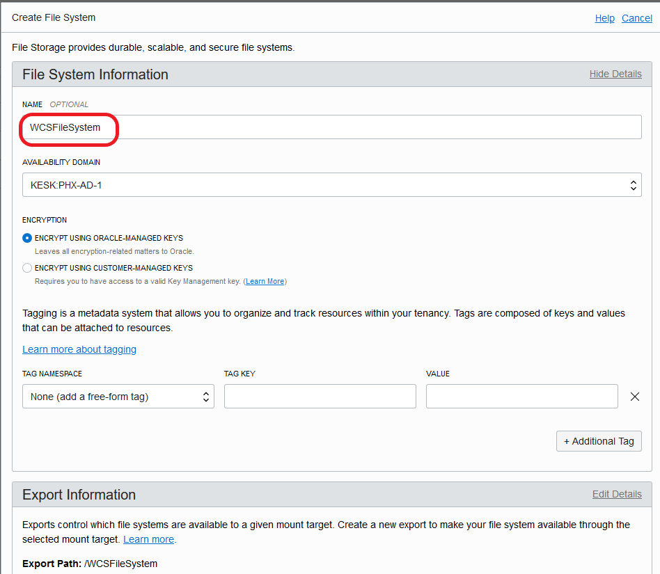
- Edit and change the Mount Target name to WCSMountTarget and make sure the Virtual Cloud Network selected is “WCSVCN” the one where all the instances are created. Select Public Subnet. Click “Create” 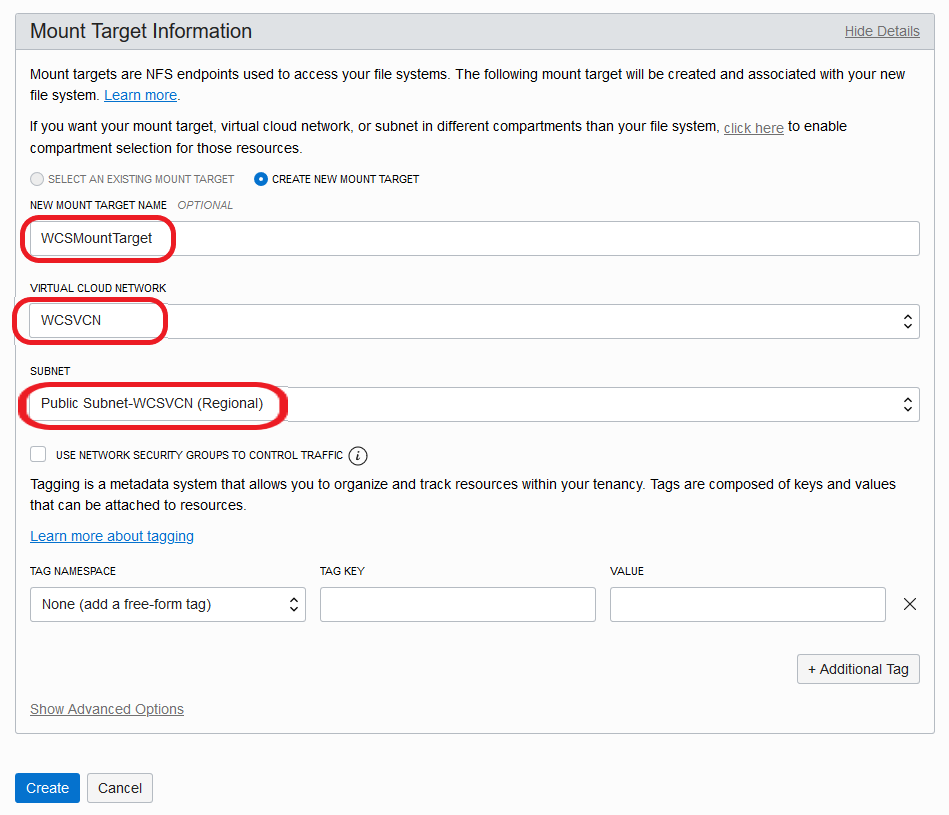
- Once the File System is created, it lands at below page. Click on “WCSFileSystem” link. 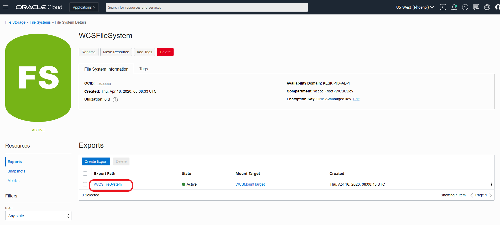
- Click on Mount Commands which gives details on how to mount this file system on your instances. 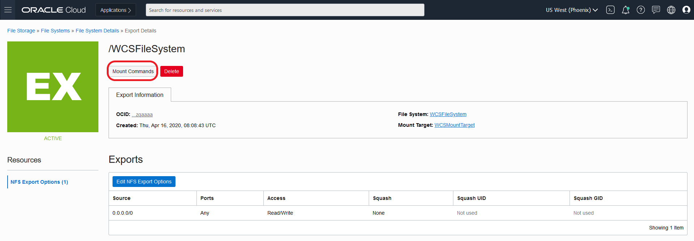
- Mount Command pop up gives details on what must be configured on security list to access the mount targets from instances. Note down the mount command which need to be executed on the instance 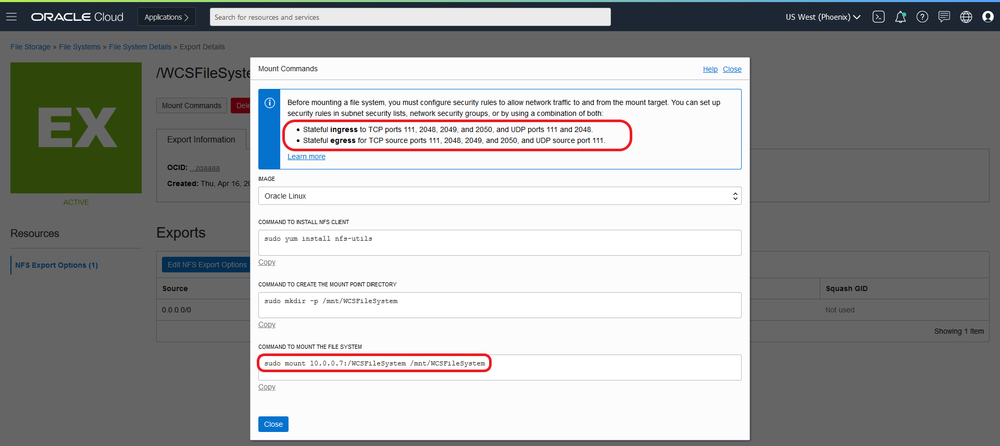
- Create the security list “fss_security list " with below Ingress Rules as given in the Mount commands pop up. 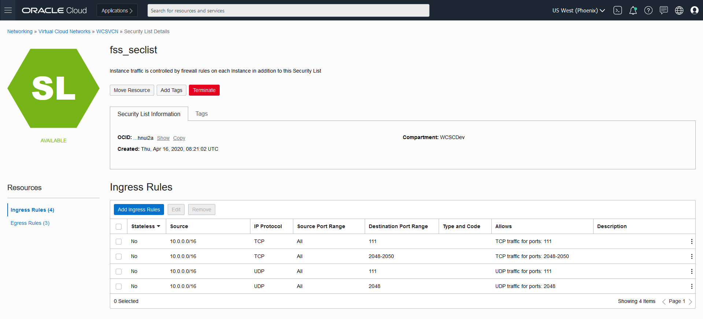
- Create the Egress rules as below as given in the Mount commands pop up.

- Make sure to add the created security list “fss_security list " to each subnets as shown below: Otherwise the created security list rules will not apply to the instances. 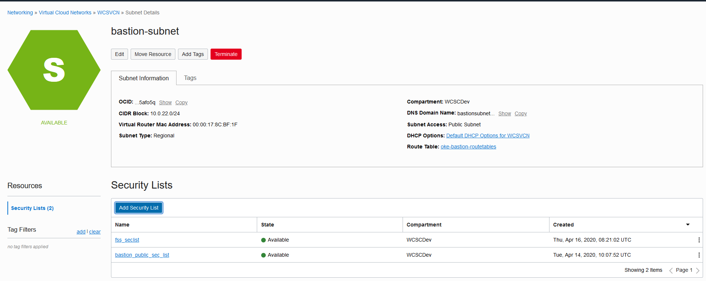 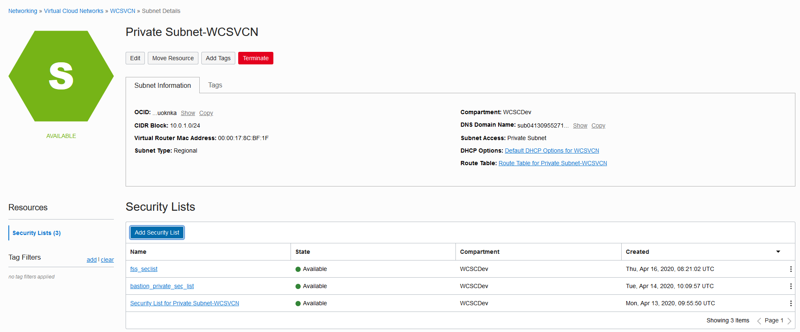 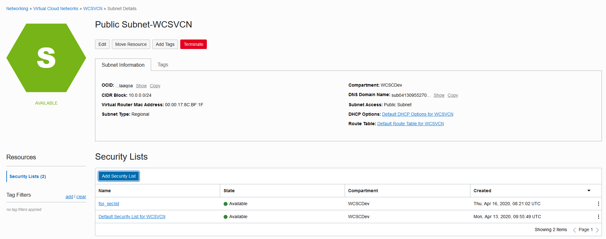
- Once the created security list “fss_security list " is added into the subnet, login to the instances and mount the file systems on to Bastion Node
#login as root
sudo su
#Install NFS Utils
yum install nfs-utils
#Create directory where you want the mount the file system
mkdir -p /mnt/WCSFileSystem
#Give proper permissions so that all users can access the share volume
chmod 777 /mnt/WCSFileSystem
# Alternatively you can use: "mount 10.0.0.7:/WCSFileSystem /mnt/WCSFileSystem". To persist on reboot add into /etc/fstab
echo "10.0.0.7:/WCSFileSystem /mnt/WCSFileSystem nfs nfsvers=3 0 0" >> /etc/fstab
mount -a
cd /mnt/WCSFileSystem
- Confirm that /WCSFileSystem is now pointing to created File System
[root@wcsbastioninstance WCSFileSystem]# df -h .
Filesystem Size Used Avail Use% Mounted on
10.0.0.7:/WCSFileSystem 8.0E 0 8.0E 0% /mnt/WCSFileSystem
[root@wcsbastioninstance WCSFileSystem]#